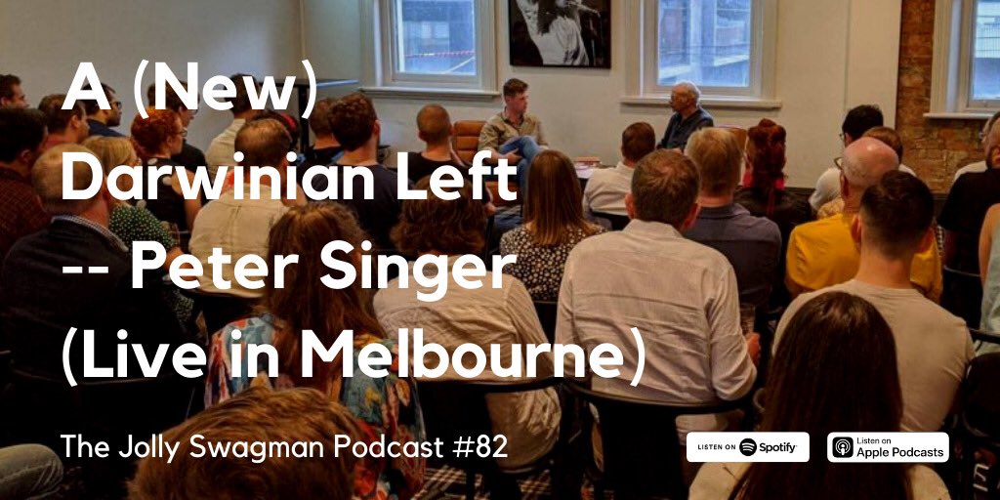

Hats off to Joseph Walker who's podcasting up a storm at The Jolly Swagman (Yes, the title gave me the wrong idea too.) Anyway, I often find long-form podcasts rather tedious (except where I'm being interviewed in which case I find them endlessly fascinating, but others probably don't). But Jo puts a huge amount of preparation into his interviews and, a little unusually is not shy to assert his own views into the interview as a counterpoint and challenge to the interviewee. It amps up the degree of difficulty of the interview, but usually works well. He's also pretty jaundiced about the excesses of PC and identity politics for which I also salute him.Anyway, I'm a member of the Swagmen and Swagettes Facebook group, and Joseph posted this post to accompany his interview with Peter Singer last month. In the interview, he goes in hot pursuit of a book of Singer's that didn't get a lot of publicity. A Darwinian Left: Politics, Evolution and Cooperation.
Anyway, here is the list of attributes of a Darwinian Left that Singer had produced in his book. Joseph then expanded it with his own list and invited others to do likewise. I then added my own thoughts, which was done quickly so may need some revision. In any event, this post is an interview to Troppodillians everywhere to quibble, bicker, backslap or propose points that should be added to the list.
Peter Singer says a Darwinian left would not:
- Deny the existence of human nature, nor insist that human nature is inherently good, nor that it is infinitely malleable;
- Expect to end all conflict and strife between human beings, whether by political revolution, social change, or better education;
- Assume that all inequalities are due to discrimination, prejudice, oppression or social conditioning. Some will be, but this cannot be assumed in every case;
Peter Singer says a Darwinian left would:
- Accept that there is such a thing as human nature, and seek to find out more about it, so that policies can be grounded on the best available evidence of what human beings are like;
- Reject any inference from what is 'natural' to what is 'right';
- Expect that, under different social and economic systems, many people will act competitively in order to enhance their own status, gain a position of power, and/or advance their interests and those of their kin;
- Expect that, regardless of the social and economic system in which they live, most people will respond positively to genuine opportunities to enter into mutually beneficial forms of cooperation;
- Promote structures that foster competition, and attempt to channel competition into socially desirable ends;
- Recognise that the way in which we exploit nonhuman animals is a legacy of a pre-Darwinian past that exaggerated the gulf between humans and other animals, and therefore work towards a higher moral status for nonhuman animals, and a less anthropocentric view of our dominance over nature;
- Stand by the traditional values of the left by being on the side of the weak, poor and oppressed, but think very carefully about what social and economic changes will really work to benefit them."
Joseph Walker's Updated Darwinian left would not:
- Sneer at religion and call believers dumb;
- Mistake a weak version of homophily for xenophobia (this point is borrowed from Nassim Taleb's Principia Politica);
- Accept Hardin's Cardinal Rule ("Public policies should be based on the rule: 'Never ask a person to act against his own self-interest.'") as absolute;
Joseph Walker's Updated Darwinian left would:
- Be okay with patriotism;
- Realise that complex systems dislike central planning;
- Recognise that small groups are essential to individual well-being and are the building blocks of larger-scale societies.
- Do you have any additions or amendments for my or Peter's lists?
To which I added these points together with a link to one of my first posts on this site describing myself as a Conservative, Liberal Social Democrat.
A few tentative thoughts:
- Human reason obviously involves cognition and reasoning, but only functions within a culture.
- Cultures are amongst other things systems of social cognition and incentives. As such, they can be more or less supportive of reason (I'm defining this broadly to include much more than rational calculation of interests, one's own or others.)
- As profoundly ignorant beings humility and patience are in short supply from those who would style themselves as our intellectual leaders and betters
- Where commonsense and/or a major and legitimate system of political cognition and values comes to a strong conclusion we should take it seriously even if we are not that well disposed to it.
I agree with Peter Singer on almost everything, except animal welfare, though I am not even too bothered by that.
From within my understanding, Joseph Walker is clueless. For instance, asking people to do things not in their personal self-interest is the basis of asking people to pay tax, fight for their country, etc. We try to fool people into believing its in their own self-interest to play along, but in no normal definition of "own self interest" is that actually true.
I have much to add, but let me suffice by saying a Darwinian left would see much of identity politics as inherently racist and sexist itself, including such ideas as the universal patriarchy and historical guilt.
Hmm, Joseph Walker seems fine to me – what's the problem?
I misread the line on self-interest. He agrees with me.
But then the next ones:
Realise that complex systems dislike central planning;
Recognise that small groups are essential to individual well-being and are the building blocks of larger-scale societies.
Yeah, sorry, both are naive. Complex system often get tackled via combinations of central planning and individual discretion.
And whilst small warm groups are often important for wellbeing, they are neither always good on balance (criminal gangs are often small groups too!), nor is it really the case that they are the 'building blocks'. I wouldnt call the nation state an organisation built out of families. Nor the catholic church. Historically speaking they grew out of a certain environment, but once standing they are entities on their own. It would be more accurate at this moment to say most small groups only exist because of the nation state, and their internal set-up is largely derived from a joint ecology.
So I dont take back the 'clueless thing', though I will admit I misread the initial quote on self-interest.
Nonsense
You're just reading against the grain. Assume he's not a nitwit (I can assure you he's not – at least as far as I understand these things) and go from there!
I mean really – saying that small groups are essential to wellbeing and larger groups? Families? You don’t think they're important?
I can be generous about eh wellbeing in small groups, but not the "the building blocks of larger-scale societies" bit. That is just a feel-good motherhood statement which smacks of a non-left agenda ("the nuclear family is the basic building block of society as mandated by Jesus"). It also contains in it a hint of something nastier, which is that these smaller groups are "more fundamental" and thus also "more permanent in their characteristics". I have all kinds of nasty associations with that.
Tell me how else to read that bit.
I will admit, btw that the paranoia now in London is also having some jittery effect on me so I am a little less generous than I normally am and perhaps should be. Also a bit quicker to the draw. But I am not deliberately misreading. Yet: if the panic here gets worse, who knows :-)
I don't mind you calling me up on that if you think that's fair.
Well I read – or try to read – not just not against but with the grain.
And wherever I have reason to respect someone I actively try not to find ideological signals in what they say. That's for two reasons. One I may be jumping at shadows and being unjust and two I might miss something in what they're saying if I'm diverted by they-would-say-thatism.
When Joseph says "small groups are essential to individual well-being," I think we agree that they are.
So let's consider the proposition that "they are the building blocks of larger-scale societies". Now he's just trying to communicate here, so I don't know how carefully those words are written. I'm thinking he's not writing legislative code. To say the small groups are building block of larger ones could be merely descriptive, the kind of thing one says to string two concepts together, but without any 'agenda'. It could be a kind of naïve arithmetic thing. The number 10 is built of 2 + 8. It could be a scientific idea that larger groups are composed of smaller ones and the opposite isn't possible. I agree it could be more ideologically freighted to mean that families are the bedrock of society. I don’t' know if that's true, but it doesn't seem odious to me. It's the kind of thing I'd wait a long time before I criticised because that view could be held with any degree of conviction or otherwise.
It never occurred to me to speculate on any of this, and it's all fine with me. So is the opposite idea (opposite in the sense of the thing you're focussing on). So one could argue that the small groups are 'built on' the larger groups in that the families in a community are only possible using resources of the community – which include language and culture and perhaps some more purely economic public goods like defence.
I'm not going to take against anyone for expressing any of this in a simple proposition. We're all just doing our best cooped up at home while the Boris Johnson's crack squads send coronavirus into our kindergartens and schools to build up herd immunity.
It's stupid to deny that biology - our neurology, hormones etc - do not have a powerful role in human behaviour. But I've always been sceptical that it's useful to collapse these clusters of evolutionary impulses into an abstraction called "human nature". To me it sounds too fixed, too uni-directional and incorrectly teleological. Almost mystical. The impulses do not all add up to a single purpose, and can be internally contradictory.
In addition, the eventual behaviour depends on a complex interaction of biology (itself the result of an internal complex interaction) and culture. The transformative interaction of biology and culture is metaphorically more like elements atomically compounding than a mixture in my opinion. Unlike a mixture, it is not useful to decompose the day-to-day uses and properties of a compound into its components.
I think if you were to go into a time machine and ask people to base policies on "human nature", the results would like quite conservative by today's standards because their perception of human nature was anchored against the day to day experience of the time. So I think it's good practice to just exclude the idea from political discourse.
I would just deliberate over morality and then do trial and error on the extent you can move people (who embody both cultural and biological influences) in that direction. Of course this calls for empirical behaviour science, and we should not have an assumption that people are infinitely malleable, but I'm not sure what a grand construct called "human nature" brings to the table. It seems to me to be mostly a check on change.
*delete the not from the first sentence.
Nicholas
Under
“Joseph Walker’s Updated Darwinian left would not:”
You include:
“ Accept Hardin’s Cardinal Rule (“Public policies should be based on the rule: ‘Never ask a person to act against his own self-interest.'”) as absolute;”
Is that what you meant.
Nick,
I agree with the notion that one should read seriously intended pieces generously and not look for things to disagree with, rather taking them on balance.
However, with this kind of event it is a bit different and re-reading these pieces my position hardens more and more.
Firstly, the nature of this event is to admonish "the left" for not being smart and truthful. These are pieces of criticism at some unidentified "progressive movement". This is done in a way that is a slight of hand, ie inn the form "should you want to earn the lofty title of an 'Updated Darwinian Left' then you should agree with following..."
This is at the very start very paternalistic and holier-than-thou. Not really an honest conversation at all. Who the hell self-identifies as an 'Updated Darwinian Left'. Its a classic academic trick of coming up with some title that sounds like you want to be it and then demanding something from you before you can claim it.
So at the very start this thing is already set up as elites talking down to the hoipoloi of the left. That is ok to some extent, but does mean the "generous reading" goes out of the window. If they are talking down, those in the dregs have reason to look at the sermon with a crtitical view.
Still, since I basically agree with pretty much everything of Peter, I will forgive him the trick, particularly since I know the progressive movement can often be very ideological so you have to hide behind some tricks.
But Joseph rubs me the wrong way. First note how he hides a bit behind scholarly knowledge. Where Peter talks normal English, Joseph has to revert to Taleb's principia and Hardin's cardinal rule. There is an in-crowd cognoscenti aspect to that that is very off-putting. Also note how he must talk about an 'Updated Darwinian Left', a level of from Peter's Darwinian Left. Really?
Then the statements. The one on Hardin is on closer inspection truly silly. Who is he admonishing here? Who amongst the left have you ever known or read about to advocate that every policy should be fully selfish-compatable? The left has always appealed to cooperative and idealistic motives. So he knocking down a straw man, basically wasting time using lofty language. It is like admonishing sumo wrestlers that they shouldnt run marathons.
The group statement is similarly silly. Sure, wellbeing and society is connected to small groups. So are pure water, food, and 200 other things. And for water, just as for small groups, there is no absolute or clear relation.
Worse, the use of the word building block is Cartesian (an in-crowd term but I know you recently wrote on it): he is setting up some notion that small groups are fundamental. You wouldnt want to break the bricks the house is built on, would you? Or change their shape or let them rot? Gotta look after those bricks as they are now and presumably always have been. His vision is one of foundations and things that exist in pure forms outside of the larger group structures whom they merely support. You of all people should disagree with that vision. You are writing a book denouncing that kind of thinking.
And the admonishing about central planning just smacks of naivity. There is no large country or large organisation that does not employ central planning to tackle complexity. To put it in cognoscenti terms: there is a whiff of the Mt Pelegrin conspiracy about this. In lefty terms, he is hiding his neoliberalism. In plain English, he is saying that poor people should not interfere via the state in things too complicated for them to understand.
Nice to meet you, Paul. We've never met but I'm friendly with your Game of Mates coauthor Cameron Murray. Cam's actually coming on the podcast this Thursday. I'm a big fan of your book. The copy Cam gave me is sitting on my desk as I write this!
You've comprehensively misinterpreted me and thrown in a bit of mind-reading too, which is not a great way to meet someone but we're in a pandemic so I guess anything goes. On your reading of my checklist, I'm "clueless", "hiding my neoliberalism", and of the "in-crowd cognoscenti". For the record, I'm none of those things -- especially not neoliberal (though possibly clueless).
A note on style. You say I "hide a bit behind scholarly knowledge." I referenced Hardin's Cardinal Rule (a mouthful but easier than spelling out the rule each time) simply because Peter cites and discusses it in his book A Darwinian Left (1999). I referenced Taleb because the idea was his and I didn't want to take credit.
Moving to your substantive points. The list is titled an "Updated Darwinian Left" because Peter was fully on board with selfish gene theory a la Dawkins when he wrote his book in 1999, but has since come to believe that group selection is plausible. This is a significant shift. The podcast was the first time I'd heard him admit this, although he does mention group selection in his 2015 book The Most Good You Can Do.
I'm not silly enough to impute Hardin's Cardinal Rule to Peter or anyone else. I agree with you, Paul, that doing this would create a straw man. The reason Hardin's Cardinal Rule is raised at all is that in his book A Darwinian Left Peter conditionally approves it insofar as it means enlightened self-interest. He then goes on to discuss privatisation as an example of how channeling self-interest can result in collective benefits. However, he also notes that enlightened self-interest can include the need to belong to a community and cooperate with others.
That is all very selfish gene theory. But the science has moved on from selfish gene theory (see this survey: https://link.springer.com/article/10.1007/s13752-014-0196-5) and I think that multi-level selection theory now provides a better account of our evolution. Hence my disagreement with Hardin's Cardinal Rule (the enlightened version, not the straw man version). It matters for 'A Darwinian Left' whether the 'Darwinian' bit is based on selfish gene theory or is based on multi-level selection theory.
On central planning. The statement "complex systems dislike social planning" is not an argument against all central planning nor is it even, I think, an argument against all central planning with respect to complex systems. It's just a call to be cautious and humble. As you know, our best-laid plans can be frustrated by the limits of our knowledge. Historically, the left has been guilty of falling into this trap. But I'm not against reform altogether (I'm a lefty for what it's worth -- not that I think that should matter). If anything, I'm saying that "experts" should be careful when interfering via the state in things too complex for anyone to understand.
If we should be careful about central planning, then equally the answer isn't neoliberalism. Quite the contrary. The logic of multi-level selection implies that individual selfishness does not automatically scale up to collective benefits. You can't benefit the whole simply by optimising the parts.
I focused on central planning because the conversation was about how the left can be better, and I assume the left is already skeptical of laissez-faire economics.
Finally on small groups and building blocks. It's clear we evolved in small groups. You seem okay on the question of small groups and individuals so I'll skip to small groups and societies.
You seem to assume that by "small groups" I mostly or only mean nuclear families. By "small groups" I really mean communities, companies, churches, teams, tribes -- units closer to Dunbar's number that require cooperation between people who aren't necessarily kin.
The point is that a nation-state can't be healthy without healthy parts. Although, again, this is not to say that complex systems like large-scale societies can be improved simply by optimising their parts -- adaptation at a particular level requires selection at the same level. I'm not clueless enough to think that a nation-state could be improved simply by optimising for families.
As I said, I mean something different when I say "small groups". My point is different than the straw man you made for me. Let me explain using your examples of nation-states and the Catholic Church. How does anything get done at a national level except by lots of small high-functioning groups (cabinets, departments, parliaments, PMOs, platoons of soldiers, etc)? The Catholic Church is a global church built of dioceses built of parishes. What power does it have if not for its parishes spread across the globe? To quote David Sloan Wilson (who inspired my take on this): "large-scale societies need to be seen as a kind of multicellular organism comprising small groups...Groups need to come first in our analysis because well-functioning groups are required both for individual well-being and efficacious action at larger scales." (p. 114, This View of Life)
I do agree with you that this is a bit of a motherhood statement. But it reminds us that there are many scales and nothing happens at the national or global scale without effective small groups. And effective small groups require something like Elinor Ostrom's Core Design Principles, which DSW discusses in his book.
*I should clarify: I don't so much disagree with the enlightened version of Hardin's rule as I think it's incapable of rounding out a properly Darwinian Left. We're more than self-interested. We're also oddly groupish.
Happy to meet too Joseph and indeed, no offense meant. But I did mean what I said, though happy to be proven wrong.
We also probably have very similar innate sympathies and opinions on many things.
But your explanation I dont really like. Peter Singer's points are made in plain English that any reasonably educated person will understand. As stand-alone statements only very few will understand "Hardin's rule", etc. So Peter might use those terms in his large book, which is fine because people engaging deeply will need to read that whole book and get some sense of background and literature. But the stand-alone catchphrases meant to tickle, challenge, and invite people to a public discussion forum should be relatively easy to understand. Your answer seems to imply you want to have a conversation with Peter about how he sees things, not really engage with the general "leftist" audience.
Your statement on groups is akin to my own take that we should understand the internal operations of groups. My 2013 book was very heavy on understanding basic group types and how they functioned. So if the call is to understand human groups to understand society, I am completely with you. But that is not how your statement reads.
Take your reply saying that nation states work via lots of small groups, like cabinets which are indeed eerily similar to how the bands of men in hunter gatherer society will have cooperated with each other, an analogy I have used myself many times. That is very true, but for understanding the nation state it is crucial to see how its basic teneth is unlike any small group: in small groups people know the group they belong to and the goals of that group are in their face. The nation state inside our heads is a fiction with a fictional past, psychology, etc. The whole in that sense does not resemble any of those parts, making the notion of "building blocks" very strange. Rather, it is the opposite way round: cabinets, ministries, and councils in their present form are the result of the operation of the nation states for centuries. Their format and habits would not exist without the long interaction of the nation state with previous entities.
If you want an analogy, one could say olympic sports have as their building blocks sports equipment. This makes one think there would be no olympics without the current types of equipment and without equipment as a whole. Neither is true historically or at present: we could have all kinds of events without any equipment, and of course equipment keeps changing and new stuff is made up.
If all you meant was that for anyone to understand society better or improve its wellbeing, it would help if they engaged with the nature and practice of smaller group behaviour, we are totally on the same page and you will find I have said the same thing many times. But that is really not what one think of when hearing that if you want to be an Updated Darwinian Left that they should admit small groups are the building blocks of society.
On the cautious and humble in the face of complexity, that's not what one would naturally think when you use the word "dislikes". On the merits of cautious and humble I am probably more in the camp of saying that precisely because we inevitably will understand the full complexity we have to try stuff boldly and simply accept we might be spectacularly wrong sometimes. It should make us tolerant of mistakes, not necessarily overly cautious. To urge hyper caution is to let the perfect be the enemy of the good. Would we ever have set up the many bold institutions we have now if we had always been very humble and cautious? I think not.
As to multi-level selection versus selfish gene, we probably agree on the underlying observation, but that is really not what one thinks of when seeing your statement on Hardin. One reads such statement in the sense that a normal user of the English language interprets words like self-interest and "absolute". Moreover, usual users will simply not get the reference and feel a bit intimidated, which is again the distinction between being nerdy in a chapter of a book and being nerdy in the bottom line.
What I hope is that you didnt mean to be interpreted how I read the announced discussion points! But it is what comes to mind.
And yeah, this paranoia in London is making me a bit cranky and quick to the draw. Didnt mean to offend, etc.